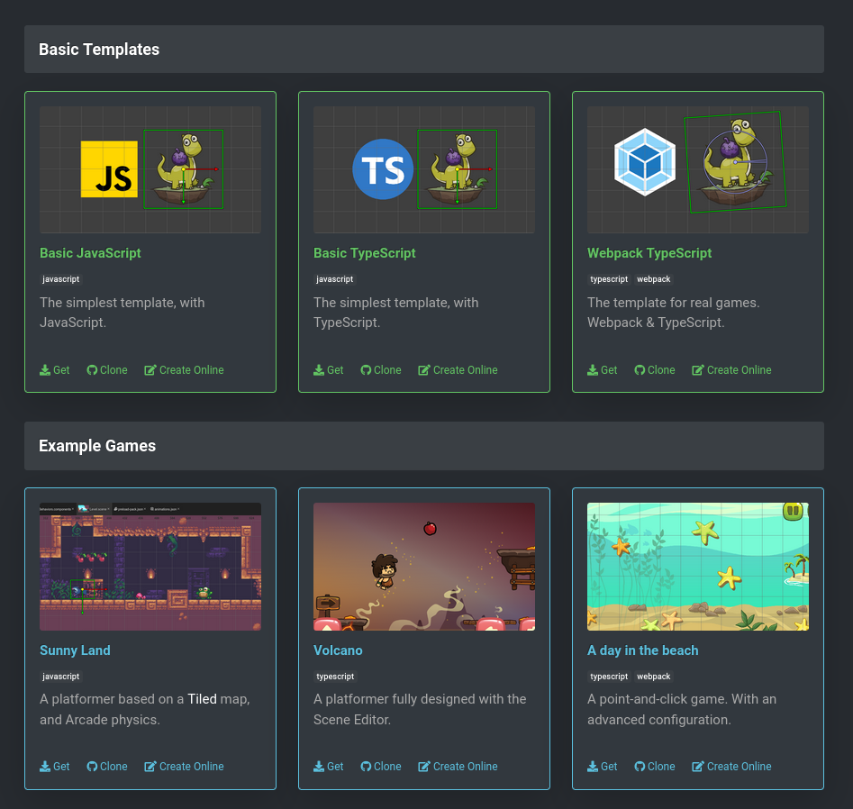
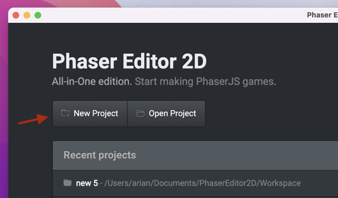
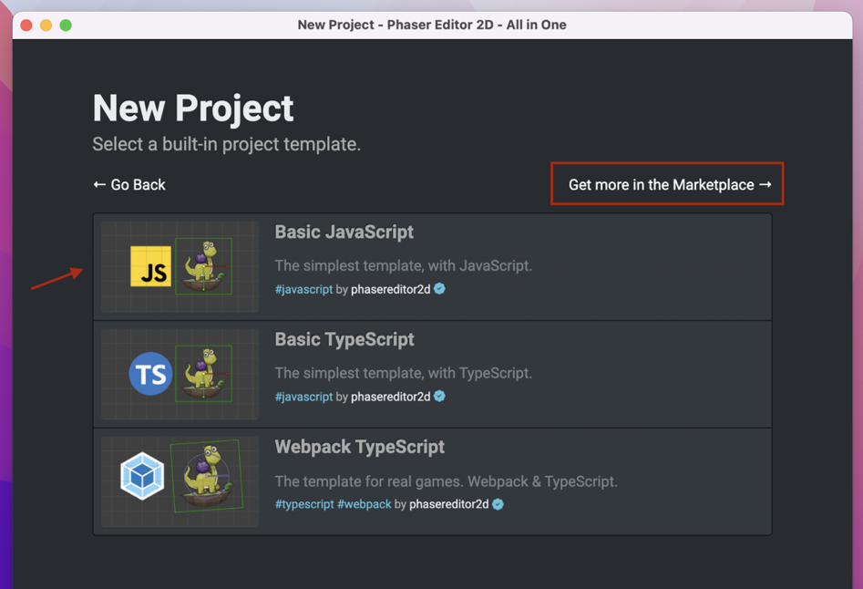
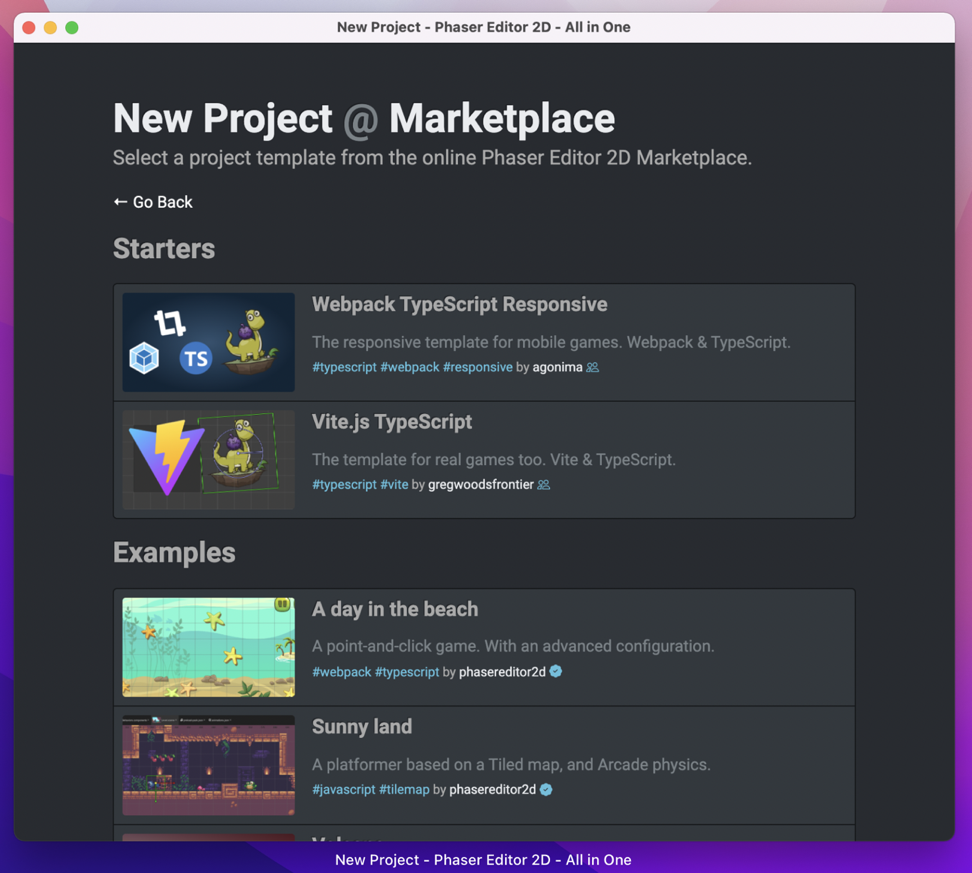
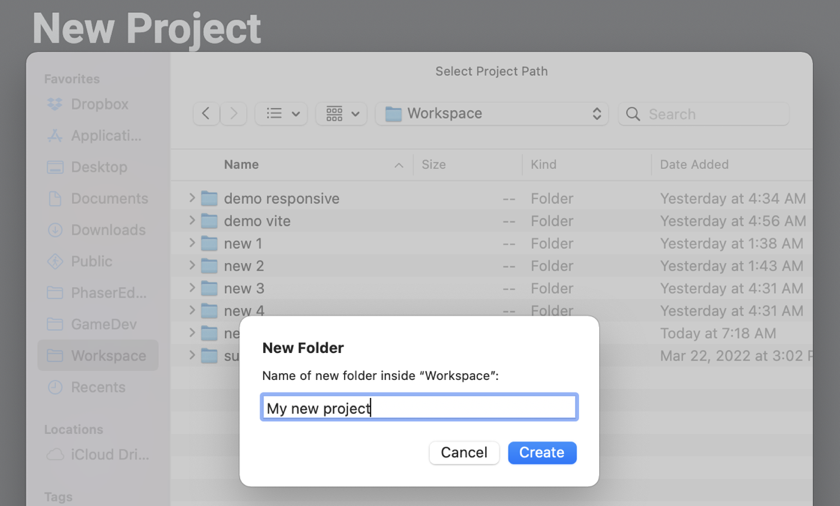
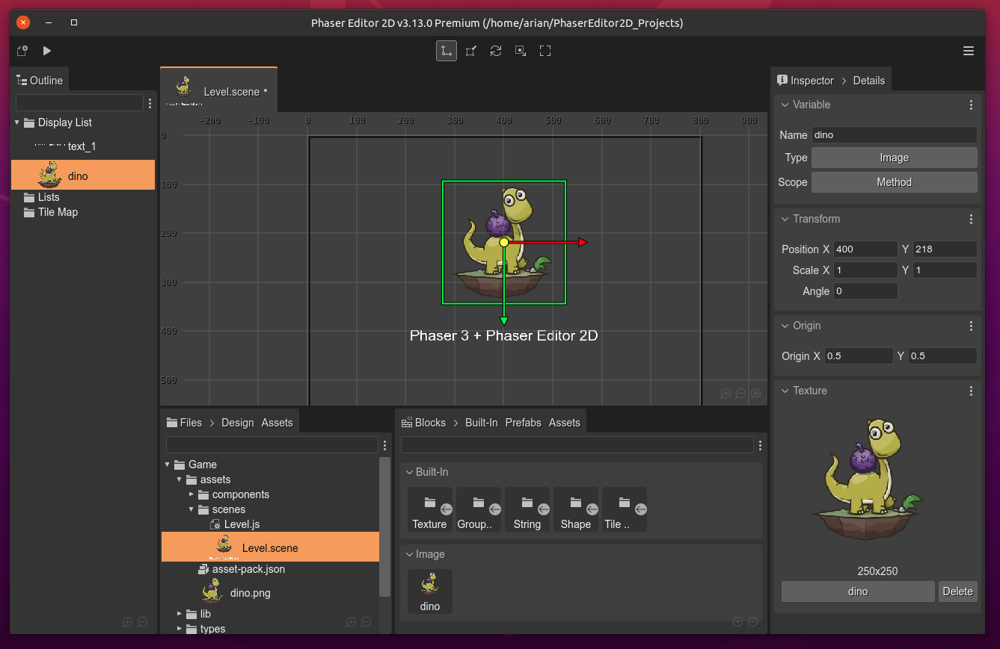
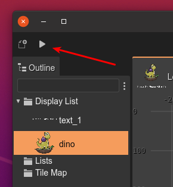

Create your first project
We provide a couple of project templates that you can download from the Phaser Editor 2D Start page. You’ll see that each template card contains links for downloading a zip with the project, a link to the GitHub project, and a link for opening the project in Gitpod (a cloud-based development environment).
There are two groups for templates: Basic Templates and Example Games.
The Basic Templates are “empty” projects with different setups. If you are making a professional game, we recommend using the Webpack TypeScript template.
You can take a look to the Example Games for learning Phaser Editor 2D by looking the code of “real games”.
Each project template has a README file (in the GitHub repository) with the instructions for installing all required dependencies.
More templates are available in the Phaser Editor 2D Marketplace.
This method for stating a new project is great for the Phaser Editor 2D Core distribution or for starting a new project in the cloud.
The Phaser Editor 2D All-in-One distribution has the option of creating a new project. It contains some built-in templates (available offline), and also connects to the marketplace for getting more.
Follow these steps:
Click on the New Project button:
Select one of the project templates. Or click on the Get more in the Marketplace link, it shows more templates available in the the Phaser Editor 2D Marketplace (it requires an Internet connection):
 Projects in the marketplace are created by the Phaser Editor 2D team but also by the community.
When you select a project template, the IDE opens the OS file explorer. Select a directory where the project content will be copied:

The new project is created and shown in the workbench. If you get it from the marketplace, then it will get a time for fetching the files.
To run your project, click in the Play button at the beginning of the toolbar:
